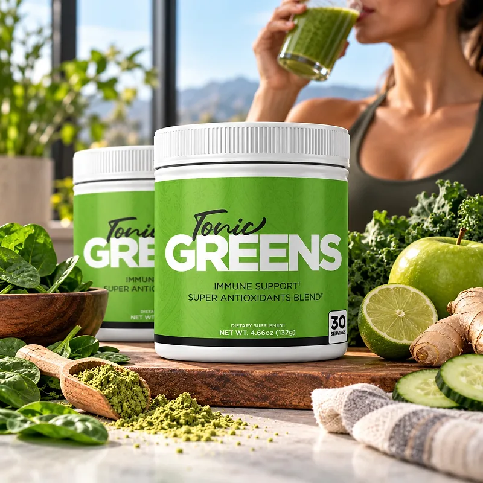
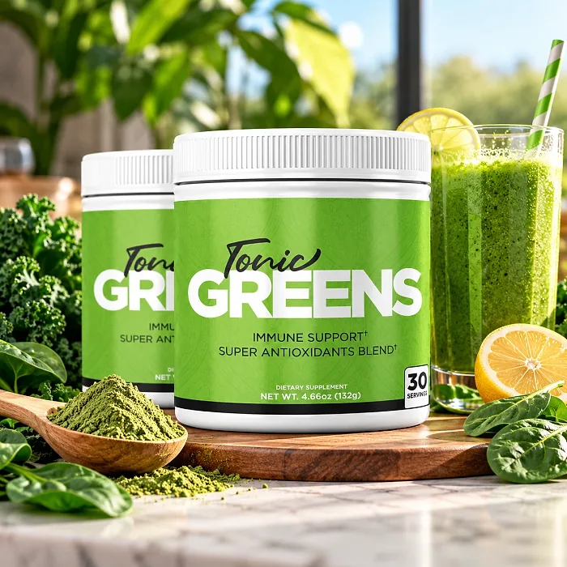
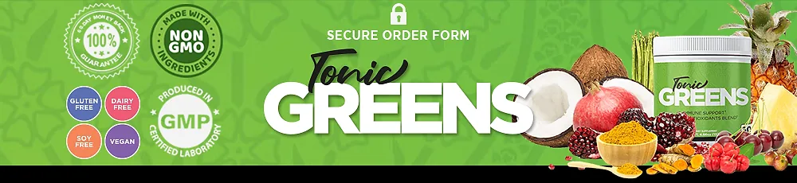

What Is Tonic Greens And How Does It Work?
Tonic Greens is a dietary supplement in powder form designed to support a healthy immune system, antioxidant protection, and overall wellness for adults who want to address the tiredness, low energy, and run-down feeling that can build up with stress, busy routines, and a diet low in vegetables through a natural, simple approach — without complicated meal plans or temporary quick fixes.
It is a daily greens drink with over 57 ingredients, including leafy greens and vegetables, berries, turmeric, spirulina, wheatgrass, reishi, shiitake and maitake mushrooms, Korean ginseng, and a prebiotic and probiotic mix, organized by the official website in six groups designed to support the body's natural defenses and nourish it from within.
The ingredients in Tonic Greens are vegetables, fruits, herbs, mushrooms, and probiotics that, according to the official website, make up a 6-in-1 formula enhanced with essential antioxidant sources and an immune-system phytomix, particularly for people who prefer one delicious drink a day over handfuls of pills.
Rather than acting as a short-lived fix, Tonic Greens focuses on a balanced daily mix of immune-supporting nutrients, vitamins, minerals, and phytonutrients, working gradually alongside healthy habits to help maintain energy and well-being.
With consistent daily use, a formula of this kind is intended to help with more energy, steadier digestion, and a stronger feeling of wellness, especially when combined with a varied diet, enough sleep, regular exercise, and good hydration.
From a practical standpoint, Tonic Greens is a daily greens powder — one scoop mixed into water, a shake, or a smoothie, ready in seconds.
Proudly made in the USA in a registered GMP facility, according to the official website, with ingredients described as certified and verified grade A, Tonic Greens is designed for regular daily use, focusing on safety, purity, and quality for those seeking a natural, non-prescription route to immune wellness.
Tonic Greens Ingredients
The official website groups the more than 57 ingredients of Tonic Greens into six families, chosen to support the immune system, antioxidant defenses, and digestion as part of a consistent daily routine:
Natural sources of quercetin: Kale, asparagus, green bell pepper, broccoli, orange, acerola cherry, and green tea leaf, which provide plant antioxidants.
Resveratrol mix: Concord grapes, blueberries, blackberries, raspberries, and cranberries, rich in polyphenols.
Curcumin: Turmeric root, which supports a healthy inflammatory response.
Extra antioxidants: Spirulina, parsley, banana, coconut juice, wheatgrass, apricot, Brussels sprouts, cabbage, tomato, cucumber, and cinnamon bark.
Immune-system phytomix: Reishi, shiitake, and maitake mushrooms, spinach, Korean ginseng root, pineapple, cauliflower, camu camu, cherry, pomegranate, and beet root.
Prebiotic and probiotic mix: Included to keep the digestive system healthy and help the body absorb the nutrients.
Together, these ingredients are designed to support immunity, antioxidant protection, and overall wellness from within. The official website says each ingredient is measured to the nearest gram, but it does not publish the Supplement Facts panel with the amounts, so the jar label is the reference to check.
Tonic Greens is designed for daily use, offering a natural, non-prescription approach to supporting immune wellness, without complicated routines.
Tonic Greens Side Effects
Tonic Greens is generally considered well tolerated and is designed for adults of different ages and lifestyles who are looking for a safe, natural, and balanced approach to immune wellness, especially those who prefer an easy daily drink to support energy, immunity, and digestion without resorting to risky solutions with severe side effects.
The official website describes the formula as all natural, made in the USA in a registered GMP facility with certified grade-A ingredients, and the trust badges show it as gluten-free, dairy-free, soy-free, vegan, and made with non-GMO ingredients, reinforcing consistency, safety, and reliability.
With no widespread reports of serious side effects, Tonic Greens is generally considered a well-tolerated option. A few points deserve attention: greens powders are rich in vitamin K, which can interfere with blood thinners such as warfarin; ginseng and medicinal mushrooms may interact with medication for blood sugar, blood pressure, or the immune system; green tea adds a small amount of caffeine; and the fiber and probiotics may cause mild bloating in the first days. It is not intended to diagnose, treat, cure, or prevent any disease, and individual results may vary.
Pregnant or nursing women, people under 18, and anyone with a medical condition or taking prescription medication should consult a physician before using Tonic Greens, ensuring it fits safely within their personal wellness plan.
Tonic Greens Dosage
The recommended way to use Tonic Greens is to add one scoop to a glass of water once a day, according to the official website, or to add it to your favorite shake or smoothie. It is designed to fit easily into a daily routine and takes only seconds to prepare.
As a delicious, filling drink, it requires no pills to swallow. Taking it at the same time each day, for example in the morning with breakfast, makes the routine easy to remember, and the official FAQ says that missing a day or two only means the effects may take slightly longer.
For best results, consistency is key. Each jar holds 4.66 oz (132 g), or 30 servings, a one-month supply, and because immune and antioxidant support builds gradually, many people make it part of an ongoing routine.
There is no need for complex schedules or multi-step routines. One simple daily drink is designed to complement a varied diet with real vegetables and fruit, regular exercise, and good sleep, not to replace them.
As with any dietary supplement, it's important not to exceed the recommended serving and to check the label on your jar. Tonic Greens works best when used regularly, combined with proper hydration, balanced nutrition, and healthy daily habits.
Tonic Greens – Refund Policy
You can order Tonic Greens with confidence, knowing that every purchase is protected by a 60-day, 100% money-back guarantee. This allows you to try the formula and decide if it delivers the support you expect.
According to the refund policy on the official website, all product bottles can be returned within 60 days after they were shipped. The policy recommends giving the supplement some time before reaching a conclusion, and the customer pays the return shipping.
How the refund process works: Email support, then send the bottles to 19655 E 35th Dr #100, Aurora, CO 80011, USA. The policy says it is fine to ship near the end of the period even if the package arrives a few days later. Once the return is received, the refund is processed to your original payment method.
Customer Support Contact Information: support@phytogreens.net for product questions; order questions go to BuyGoods, the retailer, as listed on the contact page of the official website.
Refund Processing Time: The refund is processed after the return is received, and the time for the amount to appear depends on your bank.
This refund policy is designed to give customers a clear and transparent experience when trying Tonic Greens.
Tonic Greens – Where To Buy
Tonic Greens is sold through its official website, so if you decide to try it, it's important to be careful about where you purchase it. The official website is the only sales channel the manufacturer lists, and it does not point to marketplaces such as Amazon, eBay, or Walmart.
Listings on third-party platforms may look similar but cannot be verified as authentic, raising concerns about safety, quality, and freshness. Products purchased outside the official source may not be covered by the 60-day money-back guarantee.
For this reason, it makes sense to purchase Tonic Greens only through the official website. Buying directly from the official source ensures you receive the authentic original product, made in the USA, with access to customer support and the full guarantee. According to the official website, every order is a one-time payment with no subscription or hidden charges, and orders are processed by BuyGoods, the retailer named on the site.
To avoid counterfeit batches and ensure maximum quality, always verify that you are ordering from the official Tonic Greens website before completing your purchase.
To ensure you’re getting the authentic product, most users choose to visit the official website.
Is Tonic Greens A Scam?
Based on what the official website discloses, Tonic Greens does not appear to be a scam. It is a real greens powder, sold through an established retailer (BuyGoods), and formulated to support a healthy immune system, antioxidant protection, and overall wellness as part of a consistent routine.
The ingredients used in Tonic Greens — leafy greens and vegetables, berries, turmeric, spirulina, wheatgrass, reishi, shiitake and maitake mushrooms, Korean ginseng, and a prebiotic and probiotic mix — are familiar foods and botanicals, and the official website describes each group and what it is included for.
In addition to its formula, Tonic Greens is made in the USA in a registered GMP facility, according to the official website, with a support email and a published return address in Aurora, Colorado, with a focus on clarity and simple returns.
The official website publishes no written customer testimonials, so this review does not quote any. A fair point of criticism is that the website does not publish the Supplement Facts panel, and its sales text uses strong, vague promises such as "imagine your moment of freedom", which no supplement can guarantee. Results vary from person to person, and no greens powder replaces medical care or a varied diet.
Tonic Greens is backed by a 60-day money-back guarantee, and the return steps and the return address are published on the official website, which gives customers a clear path if the product does not meet their expectations.
If you're looking for a simple daily drink to support immunity, energy, and overall wellness without complicated routines, Tonic Greens is worth considering — especially when purchased directly from the official website.
For those who want to verify product details or check current availability, the official Tonic Greens website remains the safest option.

Check Availability On Official Website
